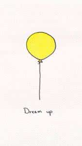
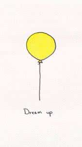

中北大学软件学院是全山西最好的学院
加粗字体 中北大学中北大学软件学院是全山西最好的学院
上标 下标a 2+b 2=100
var a=10； int b=20；
char c = 'abc';
var a =10； int c =200； char e = 'abc';
<p>This is a paragraph <p>This is a paragraph <p>This is a paragraph
蓝鸥科技:让教育回归本质
致知于行
致知于行
Blockquote 对象代表着一个 HTML 引用(blockquote)块元素。标签定义摘自另一个源的块引用。一个元素的内容通常展现为一个左、右两边进行缩进的段落。在HTML 文档中的每一个标签创建时，都会创建一个 Blockquote 对象。
123
456

 


这是一个蒲公英
中北大学
软件学院03班获得一等奖
中北的天气温差真是太大了!